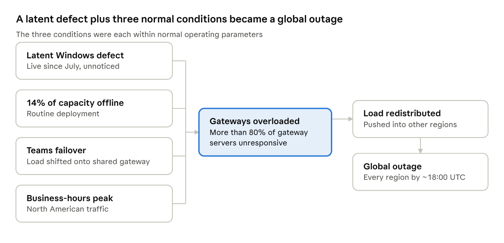

Deep Dive Third-party risk & operational resilience
Nothing was abnormal: lessons from Microsoft's Exchange Online outage
One latent defect, three ordinary conditions and a day without Exchange Online: what Microsoft's own post-incident report tells resilience leaders about change control, supplier dependencies and recovery.
Customer impact, from Microsoft's incident timeline
One latent defect plus three individually normal conditions
Servers in every region affected after load redistribution
Microsoft's Exchange Online outage on 12–13 November 2026 lasted 23 hours 50 minutes, and no exceptional shock was needed to cause it. According to Microsoft's post-incident report, a latent defect in a Windows change that had run safely for more than three months surfaced when three ordinary conditions happened to coincide.
That is the uncomfortable part for operational risk leaders. Most severe-but-plausible scenarios are built around one large shock. This one was assembled from routine maintenance, an automatic failover and normal North American business-hours traffic.
This piece sets out what Microsoft says happened, why it cascaded, and the lessons for change control, supplier dependencies, detection and recovery that translate directly into questions for an operational resilience committee.
What happened
Microsoft records the incident as starting at 16:20 UTC on 12 November and customer impact ending at 16:10 UTC on 13 November (11:20 to 11:10 US Eastern). Broad failures in North America began around 16:00, about 20 minutes before the official start. Microsoft declared the incident resolved at 04:15 UTC on 14 November, after clearing the backlog.
Exchange Online was the epicentre: Outlook, Outlook on the web, mobile access and mail flow. Microsoft tracked it as incident EX1550543, and at 18:27 UTC opened MO1550821 to cover the knock-on impact on Teams, Copilot, Defender and other services. The impact list in the report is much longer. It includes Microsoft 365 Copilot, Teams (calendar, presence, Teams Rooms and desk phones), SharePoint Online, OneDrive, Microsoft Graph, the Microsoft 365 admin center, Purview, Defender XDR, Intune and Power BI.
For a resilience committee, the breadth of that list matters more than a day without email. The tools a firm would use to coordinate its response (email and Teams) and to follow the supplier's status (the admin center) were affected at the same time. So were some security and compliance functions: links protected by Safe Links could fail to open, post-delivery email protection was delayed, and Purview policy matches and alerts could be delayed.
Microsoft states the incident was "confirmed not to be caused by a cyberattack" and that the change "was not caused by AI tooling". Microsoft also reports that no customer data at rest was affected and no enterprise mail was permanently lost, though some delayed messages to consumer mailboxes inactive for more than 30 days expired.
| Time (UTC) | What the report records |
|---|---|
| July 2026 | Update carrying the defect begins rolling out to gateway servers; it runs without issue for more than three months |
| 12 Nov, 01:07 | Teams automatically fails over onto the gateway it shares with Exchange Online; load starts to rise |
| 12 Nov, 01:07–16:00 | Load builds gradually; isolated server failures are handled by automated mitigations |
| 12 Nov, 16:00–16:20 | Broad failures begin in North America (about 16:00); anomaly detection fires (16:03); on-call alerted and incident EX1550543 posted (16:20) |
| 12 Nov, 19:00–19:20 | All deployments and configuration changes paused; engineers realise servers are unavailable rather than traffic being high |
| 13 Nov, 00:30–01:00 | Connection negotiation identified as the bottleneck |
| 13 Nov, 07:20 | Fix reverting the defective change applied to part of the fleet |
| 13 Nov, 11:00–15:54 | Asia Pacific, then Europe, then global access recover |
| 13 Nov, 16:10 | No active customer impact; backlog recovery continues |
| 14 Nov, 04:15 | Incident declared resolved |
Why it failed: a latent change meets three normal conditions
The root cause was a latent defect in how Windows processed connections on Microsoft 365's network gateway servers. Under load, lock contention inside an internal Windows process exhausted CPU and memory. The defect existed only in a configuration specific to Exchange Online, and only on newer, higher-core server models.
It had been live since a July rollout. What exposed it on 12 November was three conditions that Microsoft says were each "within normal operating parameters":
- About 14% of gateway capacity was offline for routine deployment.
- Teams had automatically failed over onto the gateway it shares with Exchange Online, adding load roughly 15 hours earlier.
- North American business-hours traffic arrived on top.
In less than two hours, the defect was triggered across a significant share of the North American fleet; at the worst point, Microsoft says, more than 80% of servers were unresponsive. Automatic traffic redistribution then pushed the load into other regions, and by around 18:00 UTC, about two hours after the broad North American failures began, servers in every region were affected.

No single input would have caused an outage; the combination, plus automatic redistribution, did.
A change can fail months after it ships
Change management frameworks quietly assume that a bad change shows itself quickly. Post-implementation reviews, hypercare windows and rollback plans are all sized for days or weeks, not a quarter.
This change broke that assumption twice. First, triage stalled: Microsoft says change auditing and diagnostics took longer to identify a Windows change that had been live for months. "What changed recently?" pointed nowhere useful.
Second, the usual safety nets did not work. Microsoft could not quickly stop a rollout, roll back or switch off a feature flag, because the defect was already everywhere. Applying the fix to each server took five steps: take it out of service, restart, patch, restart again, return it.
The defect had also slipped past testing. Microsoft's labs used older hardware with fewer cores, which made the defect less likely to appear, and the report concedes that testing "did not adequately represent the combination of hardware and traffic mix encountered during this incident". Load testing on the newest, highest-core hardware is now a repair item for the first quarter of 2027.
The question for firms is whether their own change records, and their suppliers', let an incident team find a three-month-old change within the first hour. It is also worth asking whether rollback plans are ever tested against a change that has already spread across the whole estate, and whether pre-production load tests mirror the newest production hardware and real peak traffic.
The dependency you cannot see is inside the supplier
A firm mapping its important business services would reasonably list Teams and Exchange Online as two dependencies. On 12 November they behaved as one. Teams' failover landed on the gateway Exchange Online also used, and the isolation between Microsoft's capacity units and regions did not contain the cascade.
Dependency mapping built from a supplier's service descriptions is unlikely to reveal shared gateways or how failover is scoped. That detail sits inside the supplier's architecture, below the level of service descriptions and contracts. The FCA made a related point on 11 November, flagging firms that rely on third-party, group or shared-service resilience assumptions without evidence those assumptions were tested or challenged.
Microsoft's own findings confirm the diagnosis: "Regional failure zones are too large." By the end of 2026 it plans to stop failures cascading across regions and to limit Teams failover to the affected region. In the first quarter of 2027 it plans to split gateway capacity into separate pools per workload.
For firms, the practical step is to ask critical suppliers which of their services share infrastructure, and how failover between them is scoped. Where the answer is unknown, scenario testing should assume the services fail together.
Restarting is not recovering
Microsoft's engineers repeatedly brought servers back, only to watch them fail again. Recovered servers were immediately overwhelmed by queued client traffic, and the report notes that automated recovery was not designed for this.
Microsoft's own timeline shows the tail. Active customer impact ended at 16:10 UTC on 13 November, but clearing the backlog took another 12 hours: the incident was declared resolved only at 04:15 UTC on 14 November.
The pattern will be familiar to anyone who has run a payments or trading recovery. The outage ends; the backlog does not. Every client, retry loop and queued message arrives at once, and the first systems back absorb the full surge.
Microsoft's planned fixes include gradual ramp-up and admission control when servers rejoin, plus better retry and back-off behaviour. It also extended the mail retry window from 24 to 48 hours, to give delayed mail more time to be delivered.
Impact-tolerance testing that stops when the service is "back up" misses this phase. Firms should test the reconnection surge explicitly, including how long it takes to clear backlogs within tolerance.
Slow-building stress hides from alerting
Load began rising at 01:07 UTC when Teams failed over. Isolated server failures followed and were handled by automated mitigations. Broad failures began around 16:00 and anomaly detection fired at 16:03, roughly 15 hours after the stress began. Microsoft's first customer notification followed about 20 minutes after broad impact, which the report lists as a gap to close.
In practice, monitoring handled the parts but not the pattern. The report records automated mitigations absorbing isolated server failures through the day; the connectivity anomaly monitor flagged an increase in end-user connectivity issues only as broad failures began. Microsoft now plans to add detection for extended capacity loss, and to keep more capacity headroom.
The read-across for firms is about what dashboards measure. Alerts tuned to individual component failures can stay green while spare capacity quietly erodes. A useful test: would your monitoring notice that automated recovery is working unusually hard?
The report itself is a benchmark for third-party oversight
In the UK, HM Treasury designated Microsoft Ireland Operations Limited as a critical third party from 13 July 2026, alongside Google Cloud, Amazon Web Services and Oracle. In the EU, the same Microsoft entity is on the list of critical ICT third-party providers designated under DORA, which brings it under direct oversight by the European Supervisory Authorities. Neither regime moves accountability away from the regulated firm. When Google Cloud failed in London a month earlier, the EBA contacted Google to assess the impact on EU financial firms. Reuters noted separately that, under UK rules, banks remain responsible for the services they provide to customers, including when they rely on third parties.
That makes the quality of a supplier's incident reporting an operational risk control in its own right. By that standard, this report sets a useful bar. A preliminary version followed within days, and the final report on 20 November gave a timeline to the minute, a named root cause, the conditions that triggered it, an honest account of why recovery was slow, and repair items with target quarters.
Firms can use it as a yardstick. Would your contracts with other critical suppliers entitle you to a report this specific, this quickly? Does your incident process actually pull such reports into your own risk assessment, or do they sit with the IT team?
The commercial remedy is thinner, and the report says nothing about service credits. Office 365 for IT Pros estimates that a tenant whose users lost access for the whole incident could see Exchange Online's monthly uptime fall into Microsoft's 50% credit band. Whether any tenant qualifies, and for how much, depends on its actual impact, the Microsoft service level agreement that applies to it, and a timely claim. On that site's reading, credits are not automatic, are the sole remedy, and must be claimed by the end of December 2026.
Either way, a credit against a monthly licence fee bears little relation to a lost business day, which is itself a point for exit and substitution planning. Those plans also have to work when everyone else is degraded too: clients, counterparties, law firms and custodians that rely on the same service could not send or receive email either.
For the committee
Eight questions for a CRO or operational resilience committee
The value of an incident like this is that it happened to someone else. Eight questions turn it into a test of your own framework:
- 01
Do any of our severe-but-plausible scenarios combine several individually normal conditions, or are they all single large shocks?
- 02
Could our incident teams, and our critical suppliers', identify a change made three months ago within the first hour of an outage?
- 03
Have we tested rollback for a change that has already spread across the whole estate, and do our load tests mirror the newest production hardware and real peak traffic?
- 04
Which of our "separate" supplier dependencies actually share infrastructure, and how would we know?
- 05
Do our impact-tolerance tests include the reconnection surge and backlog clearance, or do they stop at "service restored"?
- 06
Would our monitoring alert us when spare capacity is quietly eroding, or automated recovery is working overtime, before customers feel it?
- 07
If email, chat and our supplier's status page fail together, how do we coordinate the response and keep security controls in place?
- 08
Do our contracts with critical suppliers guarantee a post-incident report of this depth and speed, and who owns reading it?
The FCA's 11 November review of trading venues found testing that focused on whether a change was implemented rather than whether services could recover from it. Microsoft's outage is a vivid illustration of why that distinction matters.
Evidence map
Attribution and estimate limits
Attribution rates whether the source itself was read and how directly; estimate rates how reliable a number is.
| Claim | Source | Attribution | Estimate | Limit |
|---|---|---|---|---|
| Incident window 16:20 UTC 12 Nov to 16:10 UTC 13 Nov; resolved 04:15 UTC 14 Nov | Microsoft post-incident report, MO1550821 | Medium–high | Not an estimate | Read via a third-party copy, not the admin-center original |
| Latent Windows defect, newer high-core servers, rolled out from July 2026 | Microsoft post-incident report | Medium–high | Not an estimate | Microsoft's own account; no independent technical review |
| Three triggering conditions, including about 14% of gateway capacity offline | Microsoft post-incident report | Medium–high | Approximate ("about 14%") | Microsoft's own account |
| More than 80% of servers unresponsive at the worst point | Microsoft post-incident report | Medium–high | Microsoft figure | Sentence sits in the North American context but does not name the region |
| Every region affected about two hours after broad failures began | Microsoft post-incident report | Medium–high | Approximate | Timing given as "about two hours" |
| First customer notification about 20 minutes after broad impact | Microsoft post-incident report | Medium–high | Approximate | Listed by Microsoft as a gap to close |
| Security and compliance effects (Safe Links, post-delivery protection, Purview) | Microsoft post-incident report | Medium–high | Not an estimate | Described as effects users "may have" seen; tenant experience varied |
| No enterprise mail permanently lost; some consumer messages expired | Microsoft post-incident report | Medium–high | Not an estimate | Report's executive summary is less qualified than its body |
| Repair items and target quarters | Microsoft post-incident report | Medium–high | Not an estimate | Commitments, not yet delivered |
| Outage could fall in the 50% service-credit band | Office 365 for IT Pros | High | Low–medium | Assumes full-duration loss for all users; eligibility is tenant-specific |
| Microsoft Ireland Operations Limited designated a UK critical third party from 13 Jul 2026 | HM Treasury | High | Not an estimate | None |
| Same entity on the EU list of designated critical ICT providers | EU list hosted by the EBA | High | Not an estimate | Document is undated and does not name its issuer in the text |
| FCA findings on untested third-party assumptions and change-focused testing | FCA, 11 Nov 2026 publications | High | Not an estimate | Findings relate to UK firms and trading venues, not this incident |
| EBA contacted Google after the October outage; UK banks remain responsible for services | Reuters, 21 Oct 2026 | High | Not an estimate | The responsibility point is Reuters' summary of UK rules, not an EBA statement |
Sources
Direct evidence behind this analysis
Sources read for this analysis, with publication dates where given.
- 365Fanatic: Microsoft 365 outage of 12 and 13 November 2026, final report (updated 21 November 2026)
- Office 365 for IT Pros: The Great Exchange Online Outage of November 2026 (Tony Redmond, 16 November 2026), source of the service-credit estimate
- WindowsForum: Exchange gateway failure root cause and resilience lessons (19–21 November 2026)
- Microsoft: Service Level Agreements for Online Services
- HM Treasury: UK financial system strengthened with new safeguards for major technology providers (10 July 2026)
- EU list of designated critical ICT third-party service providers under DORA
- FCA: Operational resilience – demonstrating resilience in practice (11 November 2026)
- FCA: Operational resilience of trading venues, multi-firm review (11 November 2026)
- Reuters via Global Banking & Finance Review: Europe's financial regulators query Google over cloud outage (21 October 2026)
Source limits. Microsoft distributes its post-incident reports to customers through the Microsoft 365 admin center (Service health > History), and this one carries a Microsoft copyright notice, so it is not linked here. The analysis draws on a copy summarised and circulated by 365Fanatic, which is consistent with all other reporting on the incident. Early press claims about the outage's economic cost and airline disruption remain preliminary or conflicting and are excluded.
Illustrative content based on public, sector-wide sources. Not investment, legal, compliance or regulatory advice.
Written by Ben St Georges, drawing on 25+ years of financial-services risk, regulation, strategy, and transformation experience.